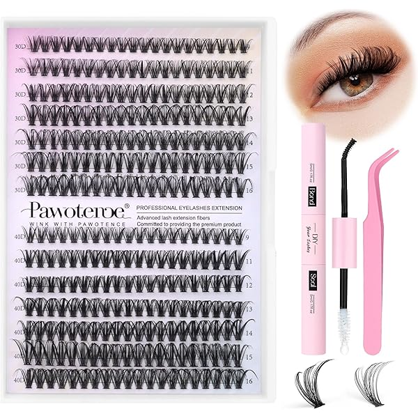
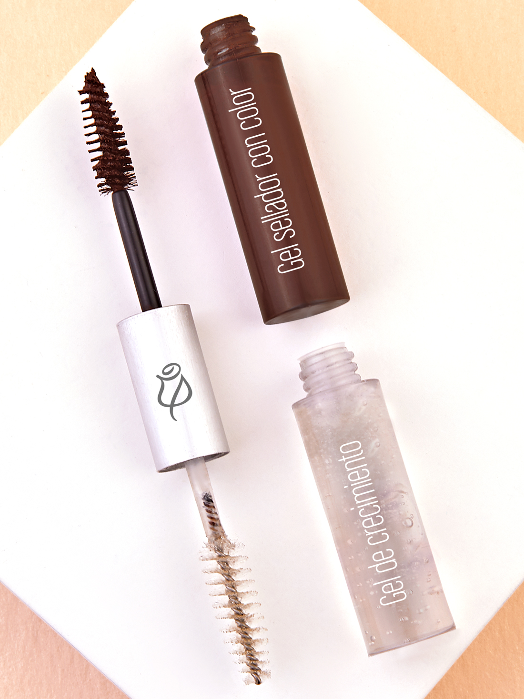
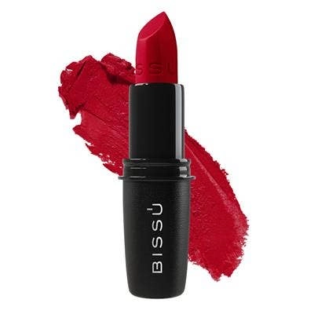
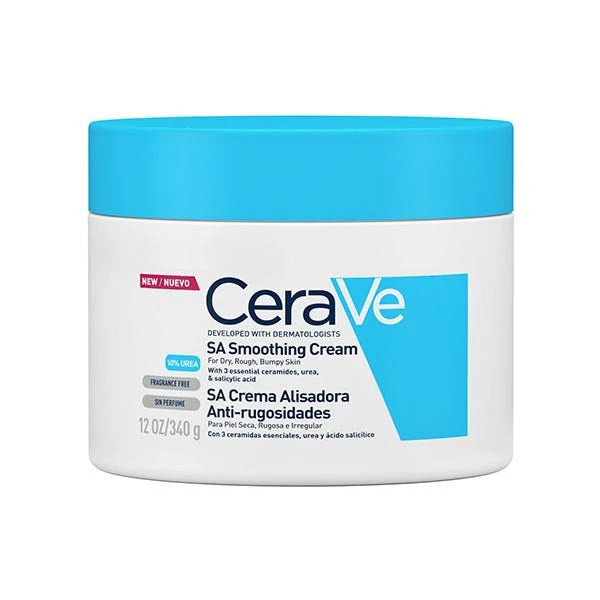
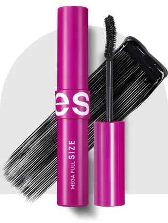
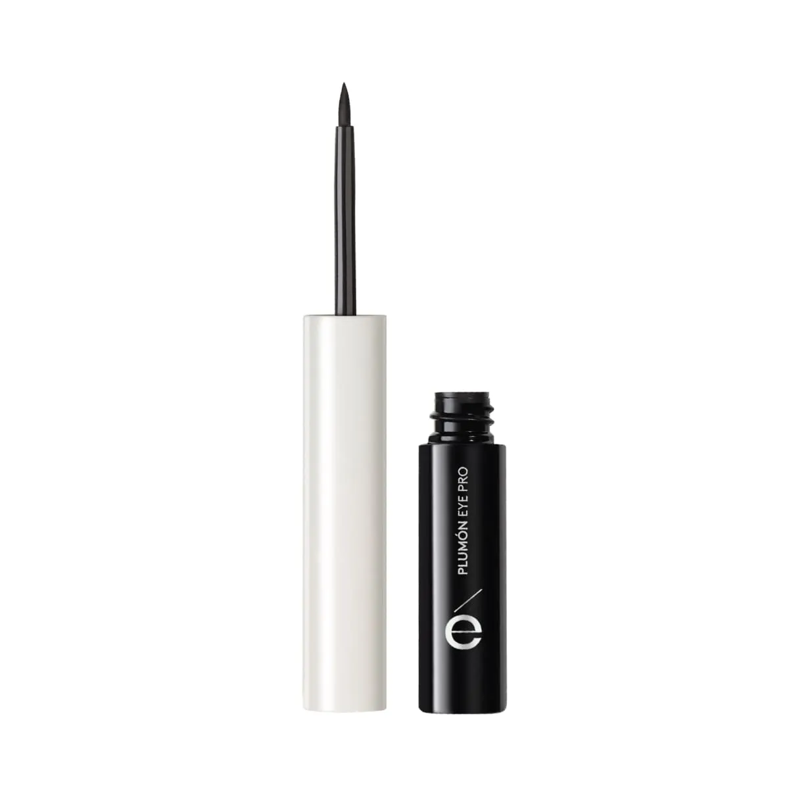
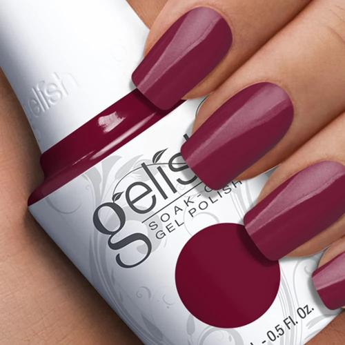
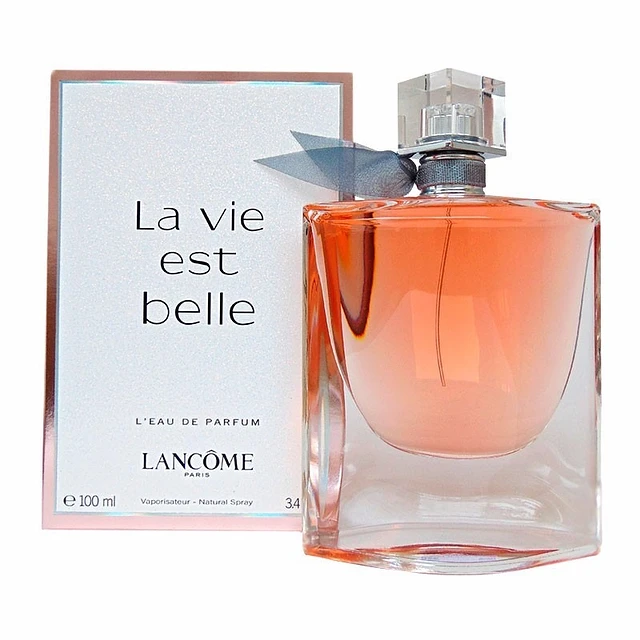
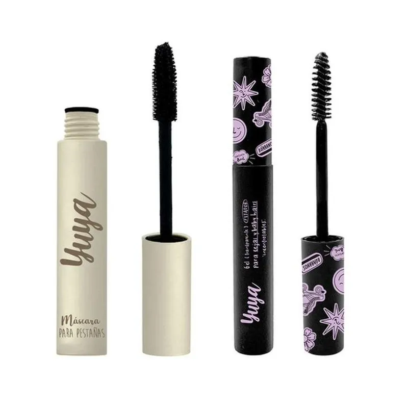

| PRODUCTOS |
IMAGEN |
DESCRIPCION |
| Pestañas |
 |
Cada uno de los pelos que hay en los bordes de los párpados, para defensa de los ojos. |
| Fijador de Cejas |
 |
Fijador de cejas: Este producto se utiliza para mantener las cejas en su lugar durante todo el día |
| Labiales |
 |
Un labial es un cosmético utilizado principalmente para dar color, textura y, en algunos casos, protección a los labios |
| Cremas |
 |
La crema es un producto que puede ser cosmético, medicinal, o alimentario |
| Pestañol |
 |
El pestañol es un tratamiento que nutre y embellece las pestañas. Puede ayudar a fortalecerlas, evitar que se caigan y a que nazcan nuevas |
| Delineador |
 |
El delineador es un producto cosmético que se utiliza para resaltar los contornos de los ojos o los labios |
| Pinta uñas |
 |
El gelish, también conocido como gel polish o polygel, es una técnica de esmaltado en uñas que tiene una duración considerablemente mayor a la del esmalte tradicional gracias a la fórmula que tiene |
| Base |
 |
La base de maquillaje en polvo es un polvo finamente molido y pigmentado que aporta cobertura a la piel con un acabado ligero |
| Perfumen |
 |
El concepto bajo el cual se desarrolla esta fragancia se centra en la idea de una belleza natural, sencilla, minimalista y la libertad de encontrar el encanto en todo lo cotidiano para capturar la felicidad con ojos y visión propia |
| Gel fijador |
 |
Fijador de cejas: Este producto se utiliza para mantener las cejas en su lugar durante todo el día. Viene en forma de gel transparente o coloreado y ayuda a mantener las cejas en su forma natural sin que se desmoronen |